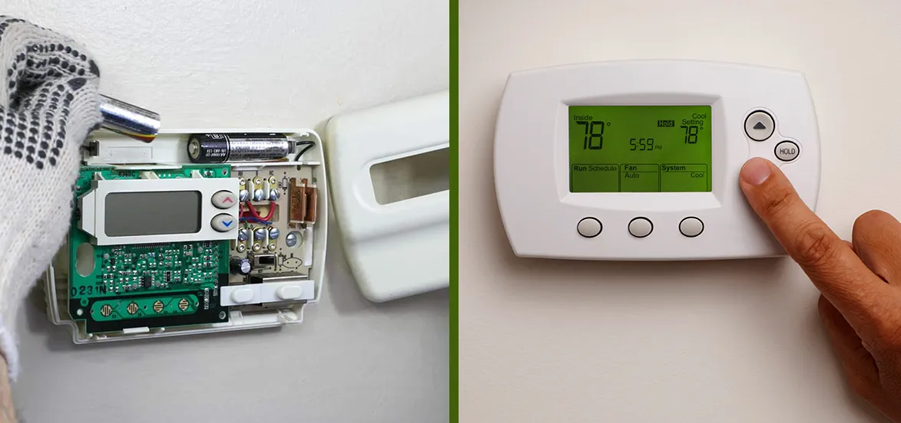

How do I know if my AC thermostat is broken?

Every home needs a well-functioning air conditioner for comfort, especially in hot and humid climates. That's why around 90% of American homes have HVAC units installed at their homes, as they help to keep you comfortable all year round. If the HVAC system is highly efficient, it will keep the house cool in scorching heat and warm in cold weather.
But if you want all the above comfort, the HVAC system has to run efficiently, which means all the components or the parts of the unit must be in good condition. One such part is a thermostat, which plays an essential role or it is the direct way of communication to the system. Minor issues in the thermostat can mimic severe problems with the unit, which directly impact the cooling system performance and, no doubt, your comfort.
If you talk about the lifespan of the thermostat, it is not set, but on average, it will last for at least ten years. But after a decade thermostat starts offering some issues due to old wiring or dust accumulation. So, if you want to know the signs of a broken thermostat, this post will help you recognize those signs. Let's get started:
6 Signs Your Thermostat Is Broken

1. The Air Conditioner Won't Turn On.
This is one of the most apparent signs of a bad thermostat in which the system doesn't turn on. The primary function of the thermostat is communicating directly with the unit as it sends a signal to the AC to increase or lower the temperature. So, if your HVAC unit has stopped taking thermostat orders, it is sure that the thermostat has some problem.
However, it can be due to wiring inside the thermostat, which is damaged or frayed. But there can be any other issue with the thermostat, so that will be the right option to diagnose the problem and offer the best solution.
2. Room Temperature Never Reaches The Thermostat Setting.
It can be due to build-up grime, causing inconsistencies between the temperature setting and the actual room temperature. For this, you have to follow the cleaning instructions given in the manual.
Apart from that, a poor installation job or good bump can also leave the level thermostat off-kilter, causing temperature discrepancies. In this case, you can place the carpenter's level above or below the thermostat and adjust it to standing level.
In addition to that, the temperature fluctuation can also be due to the bad location of the thermostat. So, ensures its right position at your home. However, if you cannot do it yourself, contact AC thermostat repair services in San Diego. Their professional is highly skilled, experienced, and qualified in AC repairing tasks.
3. High Energy Bills
Like most people, you always try to lower your home's energy bills. But if your HVAC unit thermostat is faulty, it can offer you the opposite side. So, if you notice that your home energy bills are very high, then the thermostat is the culprit many times.
That means the thermostat is not reading the temperature correctly due to HVAC overwork. The more it will work every hour, you have to pay higher energy bills as the thermostat will consume more power. To get this point clear, whether your thermostat is faulty or not, call air conditioner thermostat repair services in San Diego as they will let you know whether you have to replace or fix the thermostat.
4. The HVAC System Has Short Cycles.
The short cycle of the system can be another reason which indicates that your thermostat needs replacement. This issue happens when the system shuts off earlier than appropriate, in which the unit fails to complete a whole cooling or heating cycle. However, if this problem keeps happening, then surely you need to call a professional to replace your thermostat.
5. The Thermostat Loses Programmed Settings.
These days, every HVAC unit comes with programmable thermostats designed to maintain settings for a long time. But if you are noticing that the thermostat keeps losing these settings, it shows thermostat replacement.
6. The Thermostat Is Too Old.
With the system, your thermostat will also become old and outdated. Almost every thermostat works efficiently for at least ten years, and after that, it starts offering some issues that indicate replacement. So, shop for the thermostat wisely as these days, many programmable thermostats have entered the market with many advanced features.
How To Get The New Thermostat?
At one time, you indeed have to replace the thermostat of your HVAC system for which you have to enter the market. But before you choose anyone, you will first look at the options there in the market. Now the question arises how you to which is the right option?
To get this answer let’s discuss two helpful tips: -
1. Know The Feature To Look For
No doubt, thermostats have also become increasingly advanced. That means with every new day, advanced thermostats with unique abilities are entering the market. But before you choose any of the thermostats, you must know some of its favorite features like: -
- Easy-to-use controls
- Automatic temperature changes
- Auto changeover
- App control
- Helpful reminders
It is also true that all these features also determine the cost of the thermostat. That means the more advanced features thermostat will cost higher, which you haven't paid till now.
a. Choose A Suitable Thermostat Type.
Homeowners these days have many options when it comes to choosing the thermostat type. That means every thermostat comes with different features, but always opt for the best one for you. Let's discuss the types of thermostats:
- Programmable Thermostats
- Mechanical Or Manual Thermostats
- Remote Energy Thermostats
- Learning Or Smart Thermostats
- Digital Non-programmable Thermostats
Programmable thermostats can automatically adjust the set temperature all the time. With this, it makes the most efficient HVAC system.
A mechanical thermostat allows you to set the temperature settings manually. However, this type of thermostat is best for those homeowners who prefer fixed temperatures.
This type of thermostat allows the owners to manage, set, program, and monitor the HVAC system with the help of a smartphone, tablet, and computer.
These thermostats are programmable but don’t allow you to do programming. That means these thermostats learn your preferences and then create a schedule that matches your preferences.
This type of thermostat comes with a digital readout that is DRO. They are best for those people who love to do manual controlled settings, but they need an LCD screen display.
How To Troubleshoot The Thermostat?
Check The Screen Of The Thermostat.
If you are facing some issues with the thermostat, check the screen of the thermostat and ensure it is lighted. If the screen is blank or unlighted, then indeed, your thermostat needs replacement.
Check Circuit Breakers
If some problem occurs, check the circuit breaker to ensure they are not tripped. Remember to look for breakers on both the HVAC unit and the main breaker box. If they are tripped by chance, reset the breakers and test your thermostat and HVAC unit again.
Try Replacing Batteries
These days many digital thermostats are powered by AA or AAA batteries. If the thermostat batteries are worn out, you need to replace them with a fresh set. However, this step can quickly resolve many thermostat problems.
Clean The Thermostat
Many things like dust, nicotine build-up, and other dirt inside affect the thermostat performance. However, you can easily open some of the thermostats to clean. At the same time, others will require unscrewing the faceplate.
The Bottom Line
The above are some of the issues which indicate that your thermostat is broken. But if you do not fix the troubleshooting steps, you have to call the air conditioner thermostat repair company in San Diego.
They will send the professional to your home who will quickly spot the problem and offer the best solution at an affordable price.